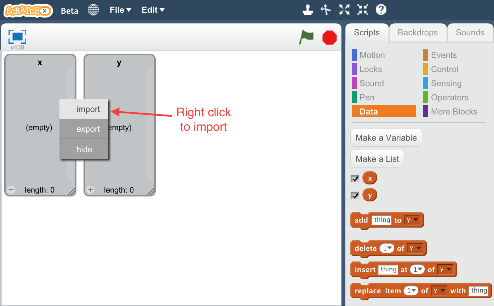
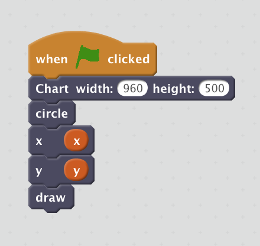

Contents
Introduction
If you have built castles in the air, your work need not be lost; that is where they should be. Now put the foundations under them.
Henry David Thoreau

This experimental Scratch extension aims to make data visualization more accessible to a wider audience. More than that however, this extension is an exploration of teaching the abstract and theoretical underpinnings of data visualization through playful experimentation.
It is powered by Vega, a visualization library built on D3.js for creating interactive graphics.
If you have any questions on the extension's use please reach out to jondinu [at] gmail.com or create a Github issue.
Especially if you are a developer and would like to extend it, or you are a teacher and you would like to use it in your classroom.
Audience
Is Scratch Viz right for me? And how might I use it?
There are a number of ways to leverage this extension and it seeks to accomplish the following 4 goals for it's community:
-
Teach kids and novices about data, analysis, and visualization by making the abstract concrete.
-
Encourage (and inspire) kids to learn math and science concepts through creative exploration.
See the Math and Science exercises in the example projects below.
-
Empower non-technical individuals (designers and artists) with an easy to use, yet flexible tool to create professional data graphics.
See Saving and Exporting graphics.
-
Provide a rapid prototyping and sketching tool for experienced (technical) data visualization professionals by decreasing the overhead to experiment with a "visual language".
See Extending Scratch Viz for custom visualizations.
Getting Started
The quickest way to get up and running is to find an example below that uses a similar chart type and extend it to use your own data.
To get started created visualizations, all you need is a web browser (and potentially some data): Launch the Scratch Viz extension on ScratchX.
Once you are in the Scratch editor, you can begin creating visualizations by building them up with the custom blocks that this extension defines. To render the visualization, this extension uses another popup window (outside of the Scratch editor).
To learn more about the extension and see what possibilities it offers, please see the:
Google Chrome, Firefox, and Safari web browsers (any modern browser really) should all work with this extension.
Data
Using the extension, there are two options for data to use in your visualizations:
- Synthetic Data (generated with Scratch itself)
- External Datasets (CSV or TSV)
If you would simply like to experiment with the extension and basic charts (without having to worry about messy data and data formats), you can create your own data with Scratch control blocks and Data Blocks. Look at the Getting Started Demo for an example of how to do this for a scatterplot.
Generated data is often easier to get started with, but to create a visualization that is informative you will need to incorporate external data. Again you will use Scratch Data Blocks and create a List Block. This time however you will not populate its values with a loop, but if you right click on the list in the Scratch canvas it should open a dialog to import a file. This works with delimited tabular files (CSV and TSV) and prompts you to select a column to import.

Each of these lists will represent one dimension to visualize.
I have provided a number of datasets in the Github repository which have been parsed and cleaned to work with this extension. Please refer to the data documentation for information on what the datasets represent and download the files locally from the Github repository (or from this site).
Scratch Blocks
This extension defines a number of Custom Blocks which each represent a visual encoding that can be composed to create a number of visualizations. Each of these blocks can be grouped into one of the following categories:
There are only a few rules to follow in order to make a sensible visualization and ensure that the extension works successfully. Again, the best way to get started quickly is to start from an example, but as long as you obey the following you should be fine:
- Start with a Chart block.
- Use one (and only one) mark block (circle here).
- You are required to use exactly one x and exactly one y block.
- End with a draw block.
If you would like to learn more about the visualization theory that underlies the extension and blocks, the following resources are great introductions: Visualization Analysis and Design and The Visualization Alphabet
Core
The following two blocks ( Chart and draw ) are essential for any project.
The block defines the visualization and creates the pop-up window to display the chart. This should be the first block.
- width: the width of the chart in # of pixels
- height: the height of the chart in # of pixels
Block with triggers the visualization to draw once all of its component blocks have been assembled. This block should come last.
DemoMarks
Mark blocks define the geometry to use in a visualization to represent each data point. In a project, you are restricted to only use one mark block.
Use a circle to represent each data point to create a scatterplot.
DemoUse a rectangle to represent each data point to create a bar chart. The x Channel block needs to use an ordinal scale.
DemoUse a line to represent each data point to create a line chart.
DemoUse an line with shaded area to represent each data point and create a area chart.
DemoChannels
Channels correspond to a visual encoding to use based on an attribute (or column). Channels can depend on quantitative or categorical data types.
Specify which data attribute/column to use as the x position of the Marks
- column: a List Block which contains the values to plot on the horizontal dimension.
Specify which data attribute/column to use as the y position of the Marks
- column: a List Block which contains the values to plot on the vertical dimension.
Specify which data attribute/column to use as the sizeof the Marks. Currently only controls the radius of the circle mark.
- column: a List Block which contains the values to scale the radius of the circles.
- min: the minimum radius in # of pixels for the range.
- max: the maximum radius in # of pixels for the range
Specify which data attribute/column to use as the colorof the Marks. Best used with categorical or ordinal values.
DemoScales
Scale blocks map from an input domain (data values) to an output range (pixel values).
Apply a logarithmic (base 10) transform a List Block's values.
pixel_value = log_10(data_value)Demo
Specify that a List Block's values are discrete/categorical or used to transform quantitative values into categorical.
DemoTransform a List Block's values of strings representing dates into Date objects. Has the effect of ordering the values chronologically and making the values quantitative.
Currently cannot handle extra whitespace in column values outside of quotes. If the date string have a space in them you must enclose the field in quotations.
DemoApply an exponential transform to a List Block's values
according to a specified exponent.- exponent: the power to raise each data value to. For example, an exponent of 2 would be a quadratic scaling.
pixel_value = (data_value)^exponentDemo
Apply an square root transform to a List Block's values
. For example, an exponent of 2 would be a quadratic scaling. This is equivalent to a power scale of 0.5.pixel_value = (data_value)^0.5Demo
Annotation
Annotation blocks add context to a visualization through text labels.
Annotate a chart with a title.
DemoExample Projects
Math and Science
Exporting Visualizations
Visualizing charts and graphics in your browser is great, but often you want to share what you have created. Build into the visualization is an easy way to save your chart to a image on your computer.
Simply click the Save Chart button right below the figure and it will render the canvas to a PNG image file and download it locally on your computer. Soon you will also be able to export the Vega specification which generated the chart as well.